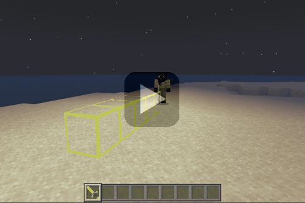
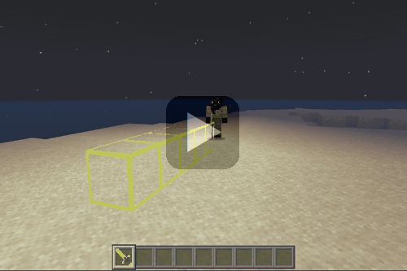

【光の剣】
はじめに
剣を装備した状態で右クリックするとライトバレット（光の弾丸）を発射できます。
動画データが間引きされているので少しわかりにくいですが、キーの押しっぱなしで機関銃のように連射できます（威力は矢と同等）。
▶風の杖でご紹介した補充アイテム要らずの無限打ちの実装を行っているので弾切れの心配もありません。
ライトバレットは発光しているので、夜間や暗闇でも視認する事ができます。
動画データが間引きされているので少しわかりにくいですが、キーの押しっぱなしで機関銃のように連射できます（威力は矢と同等）。
▶風の杖でご紹介した補充アイテム要らずの無限打ちの実装を行っているので弾切れの心配もありません。
ライトバレットは発光しているので、夜間や暗闇でも視認する事ができます。
モード切替
▶暴風の杖の実装時と同じように、Websocketサーバーと連携する事で▶スウィープロッドの実装時に使っていた「ダッシュ＋スニーク」を実行して、モード切替（バレットモード／シールドモード）が可能です。
▼バレットモード⇒シールドモード

▼シールドモード⇒バレットモード
切替時のメッセージ
モード切替を行うとウィスパーを通して以下のように天の声が流れてきます。▼バレットモード⇒シールドモード
▼シールドモード⇒バレットモード
シールドモードでの使い方
剣を装備した状態で右クリックすると、目の前に２ブロック分のライトシールド（光の盾）が展開されます。
フレーム部分以外は透明なので、反対側の様子を伺いながら戦う事も可能です。

上の画面のように、このシールドはバリアブロックと同じ性質を持つのでサバイバルモードでは壊す事ができませんが、時間制限（３０秒）があるのでタイムアウトと同時に消滅します。
ちなみに同時に展開できる回数に制限はありません。
以下のように▶いかずちの杖や▶はかいのつるぎでシールドに向かって攻撃されても手前で威力を無力化できます。
光源は松明と同様のレベル１５なので、夜間や洞窟などでも周りを明るく照らしてくれます。
また、周りに敵がいると、以下のようにオートでライトバレットを発射してくれます。
シールドからターゲットを検知してライトバレットを発射するしくみは、透明な無敵のエンティティを立ててマインクラフトに内臓されているAI機能を利用しています。
フレーム部分以外は透明なので、反対側の様子を伺いながら戦う事も可能です。
上の画面のように、このシールドはバリアブロックと同じ性質を持つのでサバイバルモードでは壊す事ができませんが、時間制限（３０秒）があるのでタイムアウトと同時に消滅します。
ちなみに同時に展開できる回数に制限はありません。
以下のように▶いかずちの杖や▶はかいのつるぎでシールドに向かって攻撃されても手前で威力を無力化できます。
光源は松明と同様のレベル１５なので、夜間や洞窟などでも周りを明るく照らしてくれます。
また、周りに敵がいると、以下のようにオートでライトバレットを発射してくれます。
シールドからターゲットを検知してライトバレットを発射するしくみは、透明な無敵のエンティティを立ててマインクラフトに内臓されているAI機能を利用しています。
ブロックモードでの使い方
シールドモード時にしゃがんだ状態で右クリックすると、ライトシールドをブロックモードで設置可能、かつ時間制限もないので松明代わりに使えます。
ちなみに素手で簡単に壊す事ができますが、以下のようにブロック内は素通りできますので通行の邪魔になる事もありません。

素手で壊すとドロップはしませんがシルクタッチを使うと回収できますので、松明代わりに手元でストックしておいたり、建築材料としても使えます。
但し光の剣で設置する場合とは異なり、ドロップしたブロックを設置すると通り抜けはできませんので、発光するところ以外は通常のガラスと同じ性質になります。
▼建築材料として利用

窓に使用するとかなりの明るさがあるので、松明などの余計な照明を設置する必要もなくなってすっきりします。
▼内装
天井照明は邪魔にならないようにダウンライト風にしています。
ちなみに素手で簡単に壊す事ができますが、以下のようにブロック内は素通りできますので通行の邪魔になる事もありません。

素手で壊すとドロップはしませんがシルクタッチを使うと回収できますので、松明代わりに手元でストックしておいたり、建築材料としても使えます。
但し光の剣で設置する場合とは異なり、ドロップしたブロックを設置すると通り抜けはできませんので、発光するところ以外は通常のガラスと同じ性質になります。
▼建築材料として利用
窓に使用するとかなりの明るさがあるので、松明などの余計な照明を設置する必要もなくなってすっきりします。
▼内装
天井照明は邪魔にならないようにダウンライト風にしています。
「光の剣」の取得
本環境のビヘイビアパック／リソースパックを含めたアドオンパックを適用しておけば、以下の方法で「光の剣」が手に入ります。
▶ネットショップ
ショップで購入する場合
以下のショップで購入できます。▶ネットショップ
コマンドで取得する場合
以下はワールドオーナーやシステム組み込み用としてコマンドで取得する方法です。サーバーサイドの処理
今回の実装では「ダッシュ＋スニーク」時のモード切替処理も含めて、剣によるシールドモードでの設置をサーバーサイドがメインで行っています。
また、▶イベントデータの詳細（Websocketサーバー用）のページでご紹介させて頂いたイベントデータを使って、以下の方法で設置先の座標を計算しています。
また、▶イベントデータの詳細（Websocketサーバー用）のページでご紹介させて頂いたイベントデータを使って、以下の方法で設置先の座標を計算しています。
- シールドの設置
ItemUsedイベント受信後、▶いなずまの弓実装時に利用した計算方法で設置先の前方座標を算出。- ブロックモードでの設置
- プレイヤーがしゃがんだ状態を
ItemUsedイベントのバリアント値で検知するようにして設置先の前方座標を算出。
おわりに
▶召雷の魔石実装時と同じようにWebsocketサーバーを介したネットショップとの接続中は発射できないようにしています。
また、「ダッシュ＋スニーク」によるモード切替もサーバー側で行っていますが、いずれも▶エンティティプロパティを使ってスイッチングを行っています。
今回のアイテムの実装は▶発射アイテムの作り方を基に応用したものです。
発射体エンティティの作り方については▶発射体エンティティのページをご覧ください。
カスタムブロックの作り方については▶ダミーブロックのページをご覧ください。
シールドモードで使えるブロックの種類は▶ブロックステートのページでもご紹介しています。
また、「ダッシュ＋スニーク」によるモード切替もサーバー側で行っていますが、いずれも▶エンティティプロパティを使ってスイッチングを行っています。
今回のアイテムの実装は▶発射アイテムの作り方を基に応用したものです。
発射体エンティティの作り方については▶発射体エンティティのページをご覧ください。
カスタムブロックの作り方については▶ダミーブロックのページをご覧ください。
シールドモードで使えるブロックの種類は▶ブロックステートのページでもご紹介しています。